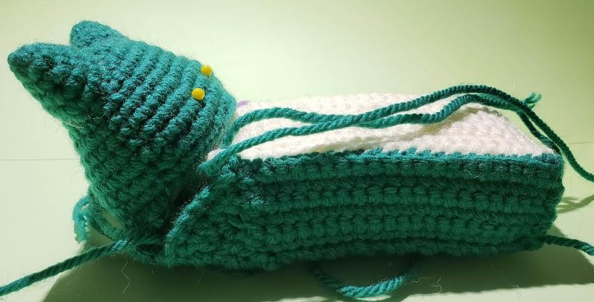
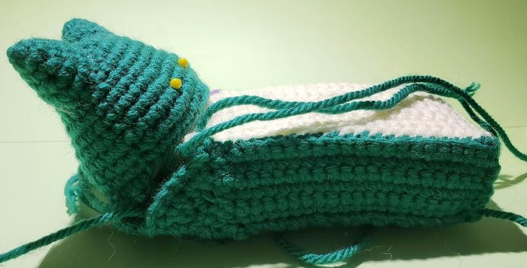

- Abbreviations
- ch = chain
- sl st= slip stitch
- st = stitch
- sc = single crochet
- Sk = skip stitch
- inc = single crochet increase
- Fo = fasten off
- dec = sc decrease / sc2tog / 2 sc together
- hdc = half double crochet
- dc = Double Crochet
- dc-inc = double crochet increase
- Tc = triple crochet
- Most projects require
- Stitch markers
- Yarn needle
- Fiberfill Stuffing
- Stuffing tool (chopstick or pencil)
- Glue gun (optional)
- Pins
- Safety eyes/Brads
Snorlax Bed
Materials
- Size 4 Worsted Weight Yarn in
- Forest Green
- Ivory/ Off white
- White
- ½ Worsted Weight Yarn (homemade)
- F hook (3.75 mm), C hook (2.75 mm)
- Black embroidery thread
- White stiffened felt
- Black embroidery thread
- Glue gun
- Fiberfill stuffing
How to make ½ Worsted Weight (WW) yarn: Cut a long strand of yarn, separate the # of strands in half (4 ply → 2 ply). You will now work with the 2 ply to make the Limbs and Limb bands.

Head:
- R1: ch 11, sc 9, (3c in last st), turn to other side, sc 9, inc [23]
- R2: inc, sc 8, inc, sc, inc, sc 9, inc, sc [27]
- R3: sc around [27]
- R4: inc, sc 10, inc, sc 2, inc, sc 12 [30]
- R5: sc around [30]
- R6: inc, sc 12, inc, sc 2, inc, (sc 4, inc)x2, sc, inc, sc [36]
- R7: sc around [36]
- R8: (sc 5, inc) around [42]
- R9-10: sc around [42]
- R11: (dec, sc 12)x2, dec [39]
- 12: (sc 6, dec) x4, sc 5, dec [34] fo.
Face: (c hook ½ ww)
- R1: ch 11, sc 10
- R2: ch 2, (sc along ch), sc 10, ch 2
- R3: (sc along ch), sc 10, ch 2
- R4: (sc along ch), sc 12, ch 2
- R5: (sc along ch,) sc 13 [14]
- R6: ch, turn, sc 7
- R7: ch, turn, dec, sc 3, dec [5]
- R8: ch, turn, dec, sc, dec [3]
- R9: ch, turn, dec, sc, [2]
- R10: ch, turn, dec, fo.
- Repeat to other side but DONT FO. sc along perimeter [~42]. Sc around perimeter again. (doesn’t have to be exactly 42 stitches at the end. Just sc around the whole face)
Ears:
- R1: 4 sc in a magic ring
- R2: (inc, sc) x2 [6]
- R3: (inc, sc 2) x2 [8]
- R4: (inc 2, sc 2) x2 [10]
- R5: sc around [10]
Arms:
- R1: 6 sc in a magic ring
- R2: sc around [6]
- R3: sc 2, inc, sc 3 [7]
- R4: inc, sc 5, inc [9]
- R5-7: hdc around
Feet:
- R1: 6 sc in a magic ring IN BROWN
- R2: [sc 2 in brown] , [inc, sc 2, inc] in Ivory (I) [8]
- R3: hdc around [8]
- R4: (sc, inc) around [12]
- R5: hdc 6, inc 6 [9]
- R6: (sc 2, dec) around in BLO [9]
Feet Claws: (½ ww, c hook)
- (ch 3, sc, hdc along chain) repeat 2x. Fo. in WHITE

Body: multiple parts
- ⇒ Pt 1: (belly/front):
- R1: ch 21, sc 20 along ch in IVORY
- R2-13: ch 1, turn, sc 20
- R14: ch 1, (along other side): inc, sc 13, [15]
- R15: sc 18, inc [turn]
- R16: sc 13
- ⇒ Pt 2: (between feet):
- R1: ch 16, sc 15 in GREEN
- R2-5: ch 1, turn, sc 15
- ⇒ Pt 3 in 2 pieces: (sides)
- In GREEN
- → pc 1:
- R1: ch 21, sc 20 along ch
- R2-6: ch 1, turn, sc 20
- [make 2 pcs for each side]
- → Pc 2:
- R1: ch 8, sc 7 along ch
- R2: ch 1, turn, dec, sc 3, dec [5]
- R3: ch 1, turn, dec, sc, dec [3]
- R4: ch 1, turn, dec, sc, dec [2]
- Connect pt3 together with whip stitch
- Pt 4: (back)
- R1: ch 16, sc 15 along ch in GREEN
- R2-29: ch 1, turn, sc 15
Assembly:
- Sew the white claws onto snorlax’s feet
- Use black embroidery thread to embroider the closed eyes and straight line smile
- Sew face onto head (or use glue gun)
- Attach ears onto head
- Whip stitch all parts of the BODY together FIRST as shown. Please use pictures of snorlax to reference. If you have a small box to help form the square shape then use it like i did to help. Stuff and form as shown
- I whip stitch the BLO of the belly with the FLO of the other parts as shown in pictures
- Whip stitch head to connect to body (this is the tricky part..)
- Connect arms as shown by sewing the edges to the sides of the bed. Can use glue gun to secure the tips together
- Connect feet to bottom of bed
- Cut 8 small triangles of white felt and use glue gun to put on tips of smile, and on tips of arms for claws

 

ENJOY! Snorlax can be used to
- - Display mini figures
- - For your jewelry (earings, rings, bracelets, watch)
- - Or just to be your new desk companion
- - Great gift for any pokemon fan - who doesn't love snorlax ?!
This pattern can be a little complicated (so i made it free) pls don’t hesitate to message me for any questions through the website or to get a faster reply, contact me through INSTAGRAM. Thank you! Tag me in your creations!